SECTION TWO
Model Samples Papers
SECTION A: (50 MARKS)
Answer all the question in this section
- Evaluate without using tables or calculators. \((3mks)\)
\[ \frac{\frac{3}{7}\,of\,28\div80\times-\frac{40}{3}}{-2\times5+(14\div7)\times3}\]
Felix has four times as many ducks as hens and three-quarters as many turkeys as ducks.
a) If he has x hens, write down a simplified expression in x for the total number of birds \((2mks)\)
b) Find the total number of birds given that the Felix has 45 turkeys.\((2mks)\)
Given that \(x=4,\, y= -2,\, and \,z= -3\) evaluate. \((3mks)\)
\[ \frac{2(x+z)^2-(x-y)(y-z)}{4(x+y)-2(y-z)}\]
Using a ruler and a pair of compasses only, construct triangle PQR in which \(PQ = 5.2cm\) \(QR=7.5cm\) and Angle \(PQR = 45^0\). By construction bisect angle PQR to meet line PR at a point M. find the ratio \(PM:MR\).\((3mks)\)
Use square and square root table to evaluate to 4 significant figures, the expression. \((3mks)\)
\[\sqrt[]{24.640-(4.362)^2} \]
The cost of a TV outside is US$ 1200. Kelvin decides to buy one TV through an agent who deals with Japanese Yen. The agent charges him a commission of 5% on the price of the TV and further 2,000 Yen as important tax. To the nearest Ksh. how much will he need to send to the agent to obtain the TV, given that:- \((3mks)\)
\(1\,US\, \$ = 110.95 \,Yen\)
\(1\,US \$ = Kshs. \,102.80\)
A two –digit number is such that the sum of the ones digit and the tens digit is 4. If the digits are reversed, the number formed exceeds the original number by 18. Find the number. \((3mks)\)
Metal block of side 5.6 cm was melted and the molten material used to make a sphere. In three significant figures, find the radius of the sphere in metres (take \(\pi =\frac{22}{7}\)) \((3mks)\)
Solve the simultaneous equations \((3mks)\)
Kinyua bought soya and millet at Ksh. 70 per kg and Ksh. 40 per kg respectively. He then mixed them and sold the mixture at Ksh. 60 per kg making a profit of 20%. Determine the ratio of soya to millet in mixture. \((3mks)\)
An aircraft left Nairobi at 2245h on Monday and arrived in Cape Town on Tuesday at 0300h. It departed from Cape Town at 0330h and arrived in Washington DC at 0630h on Wednesday. Find the travel ling time for the whole journey from Nairobi to Washington DC took? \((3mks)\)
A town B is 250 km due east of town A. Another town C is 200 km on a compass bearing of \(S40^0E\) from town B. use scale drawing to find the distance and bearing of town C from A. \((4mks)\)
1.784 kg of sugar whose density is \(1.08g/cm^3\) and 0.744kg of salt whose density is \(1.04g/cm^3\) are mixed together for a certain experiment. What is the density of the mixture in \(kg/m^3\)? ( Give the answer to 4. s.f) \((3mks)\)
The interior angle of a regular polygon is 5 times the exterior angle. How many sides does the polygon have? \((2mks)\)
Find the least number of steps in staircase if, when I go up 3 steps at a time, 4 steps at a time or 6 steps at a time, there is always 1 step remaining at the top. \((3mks)\)
An arc of a circle of length 37.4cm subtends an angle of \(153^0\) at the centre of the circle. Calculate the area of the sector bounded by this arc. Take \(\pi=\frac{22}{7}\). \((4mks)\)
SECTION B (50 MARKS)
Attempt all the questions
Kirote and Kanze bought a bus which could carry 50 passengers when full. The bus uses Nairobi-Machakos route and charges Ksh. 160 per passengers for one way. The bus makes three trips between the two towns daily. The cost of fuel was Ksh. 2500 per day. The driver and the conductor are paid allowances of Ksh. 1500 and Ksh. 800 respectively. A further of Ksh. 5,000 per day are set aside for maintenance.
a) One day the bus was full on every trip.
How much money was collected from the passengers that day? \((2mks)\)
How much was the net profit. \((3mks)\)
b) On another day, the minibus was 80% full on average for the trips how much did Kanze get if the days profit was shared to the ratio 2:3? \((5mks)\)
The following measurement were recorded in a field book of a farm using \(XY\) as the base line \(XY = 450\,m\)
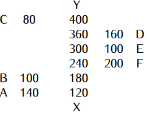
a) Using a scale, draw an accurate map of the farm. \((3mks)\)
b) Determine the actual area of the farm in hectares. \((4mks)\)
c) If the farm is on sale at Ksh. 280,000 per hectare, find how much the farm costs.\((3mks)\)
Four ships are at sea such that a steam-liner W is 250 km on a bearing of \(030^0\) from a cargo ship Q. A trawler M is 350 km on a bearing of \(145^0\) from the cargo ship Q and a yacht R is due west of Q and on a compass bearing of \(N60^0W\) from M
a) Using a scale of 1 cm=50 km, draw an accurate scale drawing showing the positions of W, Q, M, and R. \((5mks)\)
b) By measurement from your scale drawing determine:
i) The distance and bearing of R from W. \((3mks)\)
ii) The distance WM. \((1mk)\)
iii) The distance RM. \((1mk)\)
An electronics manufacturer makes speakers and sells them to a distributor at a profit of \(20\%\). The distributor sells the speakers to a retailer at a profit of \(25\%\). The retailer finally sells the speakers to customers at a profit of \(40\%\).
a) A customer paid Ksh. 1,680 for a portable speaker. Find how much it had cost the manufacturer to make the speaker. \((3mks)\)
b) A retailer bought a speaker which had cost the manufacturer Ksh. 5,600 to make. Calculate the amount he paid for it. \((3mks)\)
c) A customer bought a pioneer speaker at Ksh. 6,300. Calculate the much the distributor had paid for the same radio. \((2mks)\)
d) Express as a percentage the amount the customer paid for the speaker in (c) above to the amount the distributor paid for it. \((2mks)\)
Four trucks A, B, C, and D are used to transport 42,000 bags of maize to a depot. However, trucks A and B together take 40 days to transport the same number of bags while trucks C and D together take 25 days. Truck A carries \(1\frac{1}{2}\) times the number of bags B carries and C carries \(1\frac{4}{5}\) times as much as D.
a) Determine the number of bags of maize transported by each truck per day.\((5mks)\)
b) All the trucks A, B, C, and D work together for 5 days, after which truck C and D are withdrawn. A and B work together for another 5 days after which truck A breaks down. How long does truck B take to complete the rest of the remaining bags? \((5mks)\)
SECTION A: (50 MARKS)
Answer all the question in this section
- Use the tables of squares and square roots only to find the value of; \((3mks)\)
\[ \left(0.0847\right)^\frac{1}{2}+\left(2.35\right)^2\]
- Without using calculator, evaluate.\((3mks)\)
\[\frac{2\frac{4}{5}+3\frac{1}{5}\div\frac{7}{8}\,of\,4\frac{4}{7}-\frac{3}{5}}{1\frac{3}{4}\div3\frac{1}{2}-\frac{5}{12}+\frac{2}{3}} \]
Two years ago, Musa was three times as old as Ahmed. In four years’ time, Musa will be twice as old as Ahmed. Find their present ages \((4mks)\)
On a map with a scale of 1:16,000, a banana plantation covers an area of \(70cm^2\). Find the area of the plantation in hectares. \((3mks)\)
A Canadian tourist came to Kenya with sterling pounds 4500 which he exchanged to Kenyan shillings. He spent a quarter of the money and exchanged the rest to sterling pounds on leaving. How much in sterling pounds did he receive? \((4mks)\)
Exchange rate in Ksh. per pound
Buying Selling
119.74 119.88
The sums of interior angles of two regular polygons of sides’ n-1 and n are in the ratio 3:4. Calculate;
a) The value of n. \((2mks)\)
b) The size of interior angle of each polygon. \((2mks)\)
John bought six exercise books and three text books for Ksh. 660. If he had bought three similar exercise books and six text books, he would have paid Ksh. 210 more. How much would he pay for five exercise books and five text books? \((3mks)\)
Find the least number of biscuits that can be packed into carton boxes which contain either 4 or 9 or 24 or 40 with none left over.\((3mks)\)
In order to complete a certain job in 10 days, a company employs 30 workers to work at the rate of 8 hours a day. Determine how long it would take 20 workers working at the rate of 12 hours a day to complete the same job. \((2mks)\)
Simplify the expression. \((3mks)\)
\[\frac{y^2-4x-4xy+y}{(y+1)(4x^2-xy)}\]
A two digit number is such that the sum of the ones and the tens digit is 11. If the Digits are reversed; the original number exceeds the new number formed by 9. Find the number. \((3mks)\)
Joyce on her cycling practice cycled on a bearing of \(125^0\) for 5.5km, then on a bearing of \(180^0\) for 6.7km finally he turned northwards for 12.5km, by scale drawing determine the distance and compass bearing of her final position from the starting point. \((4mks)\)
Njoki bought Mike a suit for Ksh. 3600. This price was such that the shopkeeper had allowed a discount of 10% on the marked price in order to make a profit of 20%. Calculate both the marked price and the buying price of the suit. \((3mks)\)
Bronze is made by mixing tin, brass, and zinc in the ratio 3:5:4. A piece of bronze contains 7.2 kg of tin. Determine the total mass of brass and zinc in that piece of steel. \((2mks)\)
A cylindrical solid of length 40cm and radius 7cm is melted to form 10 similar spherical solids. Determine the radius of each spherical solid. \((3mks)\)
Starting from midnight the minute hand of a clock moved so that the clock is showing 24 minutes past midnight.
a) Find the angle through which the minute hand has moved. \((1mk)\)
b) Given that the minute hand is 14 cm long, calculate the length of the arc it describes in that time. \((2mks)\)
SECTION B (50 MARKS)
Attempt all the questions
Simon sold an article at Ksh. 5,100 after allowing his customer a 15% discount on the marked price of the article. In so doing he made a profit of 25%.
a) Calculate:
i) The marked price of the article. \((2mks)\)
ii) The price at which Simon had bought the article \((2mks)\)
b) If Simon had sold the same article without giving a discount. Calculate the percentage profit he would have made to three significant figures. \((3mks)\)
c) To clear his stock, Simon decided to sell the remaining articles at a loss of 20%.Calculate the price at which he sold each article. \((3mks)\)
(a) Using a ruler and a pair of compasses only construct triangle ABC in which \(BC = 8cm\), \(AB = 6cm\) angle \(ABC = 67.5^0\) \((4mks)\)
(b) Measure AC and angle ACB \((2mks)\)
(c) Construct a circle that passes through AB, AC and BC \((3mks)\)
(d) What is the radius of this circle? \((1mk)\)
A bus had 48 passengers at the begining of the journey, 20 passengers alighted at the first stop while 12 boarded. 8 of those who boarded at the first stop alighted at the second stop and 16 got in. The bus did not stop again upto the final destination. The charges from the starting point were Ksh. 100 upto the first stop, Ksh. 150 upto the second stop, and Ksh. 220 upto the final destination.
a) How many passengers alighted at the final destination? \((3mks)\)
b) How many passengers were ferried by the bus through the journey? \((2mks)\)
c) How much money was collected during the trip? \((5mks)\)
(a) The angle of elevation of the top of a tree from a point P on the horizontal ground \(28.5^0\). From another point Q, five meters from P towards the base of the tree, the angle of elevation of the top of the tree is \(37.2^0\). By scale drawing calculate to one decimal place the height of the tree.\((4mks)\)
(b) Four points A, B, C and D lie on the same plane. Point A is due southwest of point B. Point C is 70 Km on a bearing of \(S60^0E\) from B. Point D is equidistant from B, Q and C.
i) Using the Scale: 1 cm represents 10km, construct a diagram showing the position of B, C, Q and D. \((4mks)\)
ii) Determine the distance between A and B \((1mk)\)
iii) Determine the bearing of D from B. \((1mk)\)
Water flows through a cylindrical pipe of diameter 2.8 cm at a speed of 70m/min.
a) Calculate the volume of the water delivered by the pipe per minute in litres.\((3mks)\)
b) A cylindrical storage tank of depth 5m is filled by water from this pipe and at the same rate of flow. Water begins flowing into the empty storage tank at 9.30 p.m. and is full by 2.10 a.m. Calculate the area of the cross-section of this tank in \(m^2\). \((4mks)\)
c) A family consumes the capacity of this tank in one month. The cost of water is Ksh. 25 per thousand litres plus a fixed basic charge of Ksh. 1800.60. Calculate the cost of this family’s water bill for the month. \((3mks)\)
SECTION A: (50 MARKS)
Answer all the question in this section
- Without using a calculator or mathematical tables, evaluate: \((3mks)\)
\[\frac{15-6\times-14-21\div-3}{9\times3+-8(5-(-2))} \]
Hannah finds that she needs 29 beacons placed 42 m apart when she surveys a length of road. If she was to place the beacons 49 m apart,
a) How many beacons would she need? \((2mks)\)
b) What is the shortest distance that can be divided into exact portions of 25, 30 or 40 metres giving a remainder of 3 metres. \((2mks)\)
Two friends Wakuraya and Muchoki have goats. Wakuraya has more goats than Muchoki and if Muchoki gives Wakuraya one of his goats, Wakuraya will have twice as many goats as Muchoki. If Wakuraya gives Muchoki one of his goat, they will have an equal number of goats. How many goats does each have.\((3mks)\)
Simiyu has six times as many one-shilling coins as twenty-shillings coins, a third as many five-shillings coins as one-shilling coins and four times as many ten-shillings coins as twenty-shilling coins. If in total he has Ksh. 228, find the number of coins he has. \((3mks)\)
The figure below shows the angles of a polygon ABCDE.
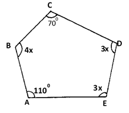
Obtain the size of each of the following angles,
a) CBA \((2mks)\)
b) CDE \((1mk)\)
The figure below is a cross-section of a swimming pool.
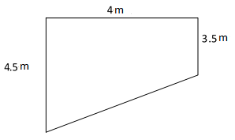
Find the capacity of the pool in litres given that its length is 27m. \((3mks)\)
Given that the water has a density of \(1g/cm^3\), calculate the mass of water in the pool \((2mks)\)
Food aid 492,850 French Franc was donated to the Turkana drought stricken area. The food was purchased from United States of America (USA) and paid for in US dollars. Calculate the exact value of the food aid in dollars if: \((3mks)\)
\(1\, French \, Franc = ksh \,12.80\,\) and \(\,1 \,Us \,dollars = ksh \,102.50\)
Munene is paid commission at the rate of 5 cents in every shilling on all goods he sells. During one month he sold 15 computers at Ksh. 14,200 each, 6 DVD players at Ksh. 6,800 each and 8 laptops at Ksh. 31,500 each. Calculate the total commission he earned in that month. \((3mks)\)
Sarah bought 3 plates and 6 jugs at a total cost of Ksh. 324. If she had bought 1 plate more and 2 jug less, she would have spent Ksh. 48 less. On another occasion Sarah bought 5 plates and 5 jugs at the same prices. Find how much she spent on the second occasion. \((3mks)\)
A boat Q is 300m due west of boat P. Another boat R is 240m on a bearing of \(155^0\) from boat Q. Using scale drawing, find the distance ad bearing of boat R from P. \((4mks)\)
Two coils which are made by winding copper wire of different gauges and length have the same mass. The first coil is made by winding 250 metres of wire with cross sectional diameter 2.1mm while the second coil is made by winding a certain length of wire with cross-sectional diameter 1.4mm. Find the length of wire in the second coil. \((3mks)\)
To prepare hay for the daily animals, green grass is dried and then processed into bails. In the process the mass of green grass decreases in the ratio 5:17. Determine the mass of green grass which must be processed to produce 1.2 tonnes of dry hay.\((3mks)\)
Evaluate using squares and square root tables. \((4mks)\)
\[\left[\sqrt[]{27.47}+(0.701)^2 \right]^2\]
- Simplify: \((3mks)\)
\[\frac{(4a+b)^2-(b-4a)^2}{(a+b)^2-(b-a)^2}\]
The radius of a cylindrical tin is increased by \(24\%\) while its height is reduced by \(18\%\). In 4 significant figures find the percentage increase in the volume of the milk in the tin.\((3mks)\)
Taps A and B can fill a water tank in 40 minutes and 30 minutes respectively while C can empty in 20 minutes. If the three taps are turned on for 15 minutes then B and C closed. How long would it take before the tank is filled? \((3mks)\)
SECTION B (50 MARKS)
Attempt all the questions
A rectangular aluminum sheet whose density is \(2.2 g/cm^3\) is 1.2 m long, 80 cm wide, and 1.5 mm thick. A square of side 10 cm is cut off from each of the four corners of the rectangle and the remaining part folded into an open cuboid.
a) Calculate:
i) To the mass of the empty cuboid to the nearest Kg. \((4mks)\)
ii) The capacity of the cuboid in litres \((2mks)\)
b) If the cuboid is filled with alcohol whose density is \(0.75 g/cm^3\), calculate the mass of the cuboid when full of alcohol. \((4mks)\)
A bus left Dodoma on Thursday evening and traveled to Mombasa according to the travel table below and arrived there on Saturday morning.
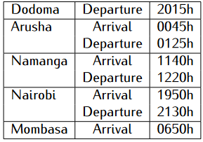
Calculate the total:
Travelling time for the whole journey. \((3mks)\)
i. Stoppage time in all stations \((3mks)\)
ii. Time taken for the whole journey \((2mks)\)
Given that the average speed of the bus for the whole journey is 60km/h, calculate the distance between Dodoma and Mombasa. \((2mks)\)
Three cargo ships P, Q, and R are at sea such that ship Q is 300 km on a compass bearing of \(N35^0W\) from ship P. ship R is 420 km on a bearing of \(220^0\) from ship Q. Another ship S is reported to be 475 km from ship R and due south of ship P.
a) Draw an accurate scale drawing showing the positions of ships P, Q, R, and S. (use scale 1cm=50 km) \((5mks)\)
b) Use your scale drawing to determine the:
i) Distance of ship S from P. \((1mk)\)
ii) Distance and bearing of ship S from ship Q \((2mks)\)
iii) Compass bearing of ship S from ship R \((2mks)\)
(a) A solution whose volume is 50 litres is made up of \(40\%\) water and \(60\%\) alcohol. When n litres of water are added the percentage of alcohol drops to \(50\%\). Find the value of n. \((4mks)\)
(b) 15 litres of water is added to the new solution. Calculate the percentage of alcohol in the resulting solution. \((2mks)\)
(c) If 6 litres of the solution in (b) above is added to 3 litres of the original solution, calculate in the simplest form, the ratio of water to alcohol in the resulting solution. \((4mks)\)
Gabriel, an artisan made an article and sold it to a wholesaler to a profit of \(25\%\). The wholesaler sold it to a retailer at a profit of \(32\%\). The retailer finally sold the article to a customer at a profit of \(45\%\).
a) If Gabriel used sh 1200 to make the article, find how much the customer paid for it. \((3mks)\)
b) A customer paid sh 4785 for another article. Calculate how much the wholesaler had paid for it. \((3mks)\)
c) During a clearance sale the retailer reduced his prices by \(20\%\). Find the percentage profit the retailer made on an article which had cost Gabriel sh 4000 to make it.\((4mks)\)
SECTION A: (50 MARKS)
Answer all the question in this section
- Evaluate without using a calculator or Mathematical tables leaving your answer in the simplest form. \((3mks)\)
\[ \frac{\frac{3}{9}\,of\,\left(\frac{2}{5}-\frac{1}{10}\right)}{\left(4+\frac{2}{3}\right)\div\left(1+\frac{4}{3}\right)}\]
Three similar 21 inch television sets and five similar 17 inch television cost Ksh. 145,000. The difference between the cost of two 21 inch television sets and three 17 inch television Sets is Ksh. 8,000. Calculate the price of a 21- inch television set and that of 17-inch Television set. \((3mks)\)
A Kenya bank buys and sells foreign currencies as shown.
Buying (Ksh) Selling (Ksh)
1 Euro 115.15 115.26
100 Japanese Yen 90.37 90.45
A Japanese traveling from France to Kenya had 4500 Euros. He converted all the 4500 Euros to Kenya shilling at the bank. While in Kenya, he spent a total of Ksh.225,600 and then converted the remaining Kenya shilling to Japanese Yens at the bank. Calculate the amount in Japanese Yen that he received. \((3mks)\)
- Use tables of square and square roots to evaluate.\((4mks)\)
\[(0.3264)^2+\sqrt[]{364.5}\]
A business woman usually makes a profit of \(32\%\) by selling a pair of shoes at sh 1650. If she reduces the price of the shoes by sh 250, calculate the percentage profit she will now make. \((3mks)\)
Kinyua bought soya and millet at Ksh.75 per kg and Ksh.45 per kg respectively. He then mixed them and sold the mixture at Ksh.65 per kg making a profit of \(30\%\). Determine the ratio of soya to millet in mixture. \((3mks)\)
The curved surface area of a cylindrical container is \(2540cm^2\). If the radius of the container is 28cm, calculate to one decimal place the capacity of the container in litres \((Take \pi=\frac{22}{7} )\). \((4mks)\)
The radius of a cylindrical tin is decreased by \(20\%\) while its height is increased by \(12\%\). In 4 significant figures find the percentage change in the volume of the milk in the tin and indicate whether it is an increase or a decrease. \((3mks)\)
Wang’ombe, a farmer, uses \(\frac{1}{2}\) of his land to plant cassava, \(\frac{1}{5}\) for planting sweet potatoes, \(\frac{1}{3}\) of the remainder for grazing and the rest for maize plantation. If he uses 10 hectares for grazing, determine how much land he uses for maize plantation. \((4mks)\)
Pauline bought 7 kg of rice and 3 KDF cakes at a total cost of Ksh. 450. Wathitha bought 5 kg of rice and 8 KDF cakes at the same prices and spent Ksh. 70 less than Pauline. Calculate the cost of each item. \((3mks)\)
(a) Using a pair of compasses and a ruler only construct a triangle ABC such that \(AB = 6cm,\) \(BC = 8cm\) and \(ABC = 135^0\). \((2mks)\)
(b) Construct the height of triangle ABC in (a) above taking BC as the base and measure the height. \((2mks)\)
One interior angle of a polygon is equal to \(40^0\) and each of the other interior angles are \(125^0\).Find the number of sides of the polygon. \((3mks)\)
Given that \(x=2\), \(y=-1\), and \(z=3\), find the value of; \((3mks)\)
\[ \frac{5x^2-4y^2z+6y}{4x^2z+5y^3-z^3}\]
Three boats X, Y, and Z are situated in such a way that boat Y is 450 m on a compass bearing of \(S55^0E\) from boat X. Boat Z is 600 m on a bearing of \(035^0\) from boat Y.
a) Draw a sketch showing the positions of X, Y, and Z. \((1mk)\)
b) Calculate the distance of boat Z from boat X. \((2mks)\)
Pipe P can fill a tank in 6 minutes while pipe Q can fill the same tank in 10 minutes. On the other hand, a drainage pipe R, can empty the same full tank in 5 minutes. If Pipes P and Q are opened and left running for 3 minutes and then the drainage pipe R is then opened and all three left running, determine how many more minutes it takes to fill the drum. \((4mks)\)
SECTION B (50 MARKS)
Attempt all the questions
Mucagara secondary school hired a number of buses and matatus to ferry the students for an academic trip to Mombasa. The number of buses hired were two-third as many as matatus and no vehicle made a double trip. Each Matatu can carry a maximum of 18 students and a bus can carry three times as many students. The hire charges were Ksh. 8,400 per bus and Ksh. 4,800 per matatu. A total of Ksh. 62,400 was spent on transport for the trip.
a) Calculate the number:
i) Of buses hired \((4mks)\)
ii) Of matatus hired \((1mk)\)
b) Calculate the number of students who took the trip if each vehicle was filled to capacity.\((3mks)\)
c) Each student contributed Ksh 150 towards the cost of the trip and the school paid the remaining amount. Calculate the amount the school paid. \((2mks)\)
Three business dealers Kavula, Nzuki, and Ngina decided to buy a bus. They agreed to pay for the bus in the ratio 6:7:5. Using the marked price of the bus, Kavula was supposed to contribute Ksh. 120,600 more than Ngina. However, the sales agent allowed them a \(10\%\) discount after paying it on cash.
a) Determine:
i) The marked price of the bus. \((3mks)\)
ii) The price at which they bought the bus. \((2mks)\)
iii) How much more Kavula and Ngina paid than Nzuki? \((2mks)\)
c) The dealers agreed that they would share monthly profits from the bus in the ratio of their contribution after setting aside \(10\%\) of the profits. If in one month the bus realized Ksh. 120,900 as the profit, how much did Ngina got? \((3mks)\)
A train left Nairobi on Monday evening and traveled to Mombasa according to the travel time table below. The train arrived in Lamu on Wednesday morning of the same week.
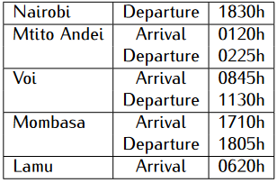
a) Calculate the time the train took to travel between: \((4mks)\)
i) Nairobi and Mtito Andei
ii) Mtito Andei and Voi
iii) Voi and Mombasa
iv) Mombasa and Lamu
b) Determine the total time for the whole journey. \((4mks)\)
c) Given that the railway road distance between Nairobi and Lamu is 1505 Km, calculate the average speed for the whole journey. \((2mks)\)
The following measurements were recorded in a field book using XY as the base line. \(XY = 400m\).
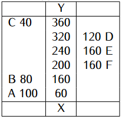
a) Using a scale of 1: 4000, draw an accurate map of the farm. \((4mks)\)
b) Determine the actual area of the farm in hectares. \((4mks)\)
c) If the farm is on sale at Ksh. 100,000 per hectare, find how much the farm costs. \((2mks)\)
Karani bought some eggs at Ksh 96 per dozen and sold three-quarter of them at Ksh 280 per tray and the remainder at Ksh 270 per tray. In so doing she made a profit of Ksh 675. Given that one tray holds 30 eggs, calculate:
a) The number of eggs she bought. \((4mks)\)
b) The percentage profit she made giving your answer to three significant figures. \((3mks)\)
c) The percentage profit she would have made if she sold all the eggs at sh 280 per tray. \((3mks)\)
SECTION A: (50 MARKS)
Answer all the question in this section
- Evaluate. \((3mks)\)
\[\frac{\left(32-(-16)\right)}{-8}-\frac{\left(18-(-)(-6)\right)}{3}\]
The cost of 5 skirts and 3 blouses is Ksh. 1750. Afro’s wife bought three skirts and one of the blouses for Ksh. 850. Find the cost of each item. \((3mks)\)
Last year, Gaceru was four times as old as his son, Kairu; in four years’ time the sum of their ages will be 55. Determine their present ages. \((3mks)\)
Given that \(x=4\), \(y= -3\), and \(z= -1\) evaluate. \((3mks)\)
\[\frac{3(x+z)^2-2(x-y)(y-z)}{3(x+z)-(y-z)}\]
A plastic test tube is made up of hemispherical bottom and a cylindrical stem, both of internal radius 0.7cm.
a) Calculate the capacity of the test tube, given that its height is 12cm. \((3mks)\)
b) Given that the test tube is filled with a liquid of density \(0.75 g/cm^3\), calculate the mass in g of the liquid in the test tube \((1mk)\)
A saleslady earns commission at the rate of 3.5 cents per shilling for all sales up to Ksh 350,000 and at the rate of 4.5 cents per shilling on any sales above that. During a certain month she sold 26 pieces of second hand computers at Ksh 14,500 per computer, 6 laptop batteries at Ksh. 4,500 each and 60 pieces of laptop chargers at Ksh 1,200 each. Calculate the total commission she earned in that month. \((3mks)\)
Water and milk are mixed such that the ratio of the volume of water to that of milk are 4:1. Taking the density of water as \(1g/cm^3\) and that of milk as \(1.25g/cm^3\), find the mass in grams of 2.4 litres of the mixture. \((3mks)\)
An arc of a circle of length 9.24cm subtends an angle of \(108^0\) at the centre of the circle. Calculate the area of the sector bounded by this arc. Take \(\pi=\frac{22}{7}\). \((3mks)\)
When maize seeds are dried up after harvest the mass decreases in the ratio 7:15. Find the mass of dried maize which is obtained after drying 1725 kg of green maize. \((3mks)\)
Bag X contains 672 sweets, bag Y 504 sweets and bag Z 360 sweets all of different types. The sweets are to be shared among a group of students in such a way each gets the same number of each type. Find the largest possible number of students.\((3mks)\)
On a map with a scale of \(1:50000\), a banana plantation covers an area of \(100\,cm^2\). Find the area of the plantation in hectares. \((3mks)\)
The radius of a cylindrical tin is increased by \(30\%\) while its height is decreased by \(25\%\). If the capacity of the old tin is \(400 cm^3\), find the capacity of the new tin. \((3mks)\)
Three towns P, Q, and R are such that tow Q is 90 km on a bearing of \(147^0\) from town P and town R is 120 km on a bearing of \(057^0\) from town Q.
a) Draw a sketch showing the positions of the three towns. \((1mk)\)
b) Calculate the distance between town P and R. \((2mks)\)
Find the exact value of: \((4mks)\)
\(1.\dot{3}\dot{2}-0.5\dot{3}\)
Simplify the following expression by reducing it to a single fraction \((3mks)\)
\[\frac{4a-5}{5}-\frac{2a-3}{3}=\frac{1-a}{6}\]
Starting from midnight the minute hand of a clock moved so that the clock is showing quarter to one.
a) Find the angle through which the minute hand has moved. \((1mk)\)
b) Determine the area of the sector described by the minute hand given that its length is 10.5 cm to 4 s.f. \((2mks)\)
SECTION B (50 MARKS)
Attempt all the questions
Using the linear equations below:
a) Complete the tables below and then write down the point in coordinate form (x,y) as shown. \((4mks)\)
\(2x+y=6\)
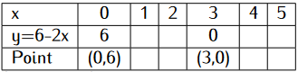
\(3x-4y=9\)
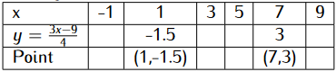
b) Use graphical method by plotting the two linear equations on the same grid to solve the simultaneous equations: \((4mks)\)
- The line \(2x+y=6\) meets x-axis and the line y-axis at the points A and B respectively. From the graph state the co-ordinates of A and B. \((2mks)\)
A rectangular sheet measuring 80 cm by 50 cm and 2mm thick is made of copper whose density is \(2.5 g/cm^3\). A square of side 5 cm is removed from each corner of the rectangle and the remaining part folded to form an open cuboid.
a) Calculate:
i) The area of the copper which forms the cuboid.\((2mks)\)
ii) The mass of the empty cuboid in Kilograms. \((4mks)\)
b) If the cuboid is filled with water whose density is \(1 g/cm^3\), calculate the mass of the cuboid when full of water. \((4mks)\)
At 1400hr, two ships A and B leave port P and sail out to sea. Ship A sails at a steady speed of 55km/h on a bearing of \(060^0\) while ship B sails at a steady speed of 40km/h on a bearing of \(140^0\). At 1800hr both ships radio back to port giving their positions. At the same time a third ship C gives its position as 300km due east of P.
a) Using a ruler and a pair of compass only, construct a scale drawing showing the positions of P, A, B, and C at 1800hr. \((4mks)\)
b) Use your scale drawing to determine:
i) Distance and compass bearing of B from A \((4mks)\)
ii) Distance of C from A \((2mks)\)
iii) Distance Of B from C \((2mks)\)
In the year 2016 Muriithi had 40 more hens than cocks and half as many ducks as cocks. In the year 2017 his hens increased by \(60\%\), his ducks increased by \(40\%\) and his cocks decreased by \(20\%\). At the end of 2017 all his birds were 1335. Determine the percentage increase in the number of his birds in the year 2017. \((10mks)\)
(a) Using a ruler and a pair of compasses only, construct triangle \(ABC\) in which \(BC=6\) cm, \(AB=8.8\) cm and angle \(ABC=22.5^0\). \((4mks)\)
(b) Measure AC and angle ACB. \((2mks)\)
(c) Construct a circle that passes through A, B and C. \((3mks)\)
(d) What is the radius of this circle? \((1mk)\)
SECTION A: (50 MARKS)
Answer all the question in this section
- Evaluate: \((3mks)\)
\[\frac{8\times \frac{1}{3} \,of \,9\div 2-\frac{2}{3} \,of \,144 \div 12+2\times3}{\frac{3}{4} \,of\, 36 \div 3-4\div \frac{2}{5} of 10+3\times-2}\]
Nyamu bought 5 pairs of trousers and 3 pairs of socks for sh 2,540. If the cost of three pairs of trousers and 5 pairs of socks is sh 1780, calculate the cost of two pairs of trousers and 6 pairs of socks. \((4mks)\)
Simplify: \((3mks)\)
\[ \frac{(4a+b)^2-(b-4a)^2}{(a+b)^2-(b-a)^2}\]
Taps P and Q can fill a water tank in 25 minutes and 20 minutes respectively while R can empty in 15 minutes. If the three taps are turned on for 12 minutes then Q and R closed. How long would it take before the tank is filled? \((3 mks)\)
The G.C.D of three numbers is 42 and their L.C.M is 1764. If two of the numbers are 84 and 294, what is the other smallest number? \((3 mks)\)
Gatungo sold a pullover to a customer for Ksh. 1240 after allowing her a 20% discount on the marked price. Find the price at which the pullover was marked. \((2mks)\)
After harvesting the green maize, the seed are dried, treated and then packed in 70 kg bags. The mass of undried maize decreases in the ratio 4:7. Calculate the mass of the undried maize that must be dried to produce 8 such bags when packed. \((3mks)\)
Hannah paid rent which was \(\frac{3}{10}\) of her net salary. She used \(\frac{1}{2}\) the remaining amount to make a down payment for a plot. She gave her mother Ksh. 3,200 and did shopping worth Ksh. 5,000 for herself. She saved the remainder which was Ksh. 12,800. How much was the down payment that she made. \((4mks)\)
The interior angles of an hexagon are \((2x + 30)^0\), \((3x - 15)^0\), \((2x + 45)^0\), \(3x^0\), \((3x - 40)^0\) and \(x^0\). Find the value of the smallest exterior angle. \((3mks)\)
A Kenya company received y US Dollars. The money was converted into Kenya Shillings in a bank which buys and sells foreign currencies.
Buying (in Ksh) Selling (in (Ksh)
1 Sterling Pound 125.78 126.64
1 Us Dollar 102.66 102.86
If the company received Ksh.12,452,658, calculate the amount, y received to the nearest US Dollar \((2mks)\)
The company exchanged the above Kenya shillings into Sterling pounds to buy a car in Britain. Calculate the cost of the car to the nearest Sterling pound. \((2mks)\)
item Juma, Ali and Hassan share the profit of their business in the ratio 2: 3: 5 respectively. If Juma receives ksh. 56, 000. How much profit did the hassan get. \((3mks)\)
Three police posts are such that Q is on a bearing of \(220^0\) and 14 km from P while R is on a bearing of \(145^0\) and 10 km from P.
a) Using a suitable scale, draw a diagram to represent the above situation. \((2mks)\)
b) From the scale drawing determine:
i) The distance and bearing of Q from R \((2mks)\)
Eighteen laborers takes 15 days to plough 6 acres of land. Find the number of laborers required to plough 8 acres in 12 days. \((2mks)\)
Starting from noon the minute hand of a clock moved so that the clock is showing 18 minutes to one.
a) Find the angle through which the minute hand has moved. \((1mk)\)
b) Given that the minute hand is 15 cm long, find the length of the arc it describes in that time. \((2mks)\)
Two coils of the same mass are made by winding brass wire of different gauges and length. If the first coil is made by winding 324 m of the wire with 3.36 mm cross-sectional diameter and the second coil is made by winding a certain length of the wire with a cross-sectional diameter of 2.52 mm, find the length of the second coil wire. \((3mks)\)
A Juakali artisan reduced the base radius of a cone shaped container by 15% but, increased its height by 45%. Find the in three s.f percentage change in its volume and state whether if the volume increased or decreased.(volume of a cone\(=\frac{1}{3}\pi r^2h\)) \((3mks)\)
SECTION B (50 MARKS)
Attempt all the questions
From a reservoir, water flows through a cylindrical pipe of diameter 0.3m at a rate of 0.28m per second.
a) Determine the number of litres of water discharged from reservoir in one hour. \((4mks)\)
b) The water flows from the reservoir for 15 hours per day for 22 days per month and serves a population of 3,000 families. Determine the average consumption of water per family per month giving your answer to the nearest 1 litres. \((4mks)\)
c) The water is charged at the rate of Ksh. 10.50 per 100 litres. Calculate to the nearest Kenya shilling the average water in a family per month. \((2mks)\)
At noon, three ships P, Q, and R start together from port A and sail out to sea. Ship P sails at a steady speed of 40 km/h on a bearing of \(055^0\). Ship Q sails steadily at a speed of 60km/h due east of A and ship R sails steadily at 50km/h on a bearing of \(152^0\). At 1530hr all three ships radio back to port giving their positions.
a) Draw a sketch diagram showing the position of ships P, Q, and R at 1500hr. \((1mk)\)
b) Use a ruler and a pair of compasses only to construct a scale drawing showing the positions of the ships P, Q, and R with respect to port A at 1500 hrs (1cm=25km). \((5mks)\)
c) By measurement use your scale drawing to determine:
i) The distance and bearing of ship P from ship Q. \((2mks)\)
ii) The distance of ship R from ship Q. \((1mk)\)
iii) The distance of ship P from ship R. \((1mk)\)
(a) A small field was surveyed and the measurements recorded in a surveyor’s field book as in the table below.
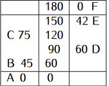
Using a scale of 1cm to 15 m make an accurate drawing of the map of the field. \((4mks)\)
(b)
i) Find the area of the field. \((3mks)\)
ii) Assuming that the baseline in (a) runs in a northern direction give the position of D relative to A using compass bearing and distance. \((3mks)\)
Four trucks A, B, C and D are used to transport 27,000 bags of maize to a depot. However, trucks A and B together take 24 days to transport the same number of bags while trucks C and D together take 15 days. Truck A carries \(1\frac{1}{4}\) times the number of bags B carries and C carries \(1\frac{2}{5}\) times as much as D.
a) Determine the number of bags of maize transported by each truck per day. \((5mks)\)
b) All the trucks A, B C and D work together for 5 days, after which truck C and D are withdrawn. A and B work together for another 5 days after which truck A breaks down. How long does truck B take to complete the rest of the remaining bags? \((5mks)\)
A solution whose volume is 160 litres is made up of \(40\%\) water and the rest alcohol. When x litres of water is added the percentage of alcohol drops to \(30\%\)
a) Find the value of x \((4mks)\)
b) If 1 litres of alcohol are added to the new solution, calculate the percentage of water in the resulting solution. \((2mks)\)
c) A blend is made by mixing 25 litres of the solution in (b) above with 20 litres of the original solution. Calculate in the simplest form, the ratio of water to that of alcohol in the blend. \((4mks)\)
SECTION A: (50 MARKS)
Answer all the question in this section
- Evaluate \((3mks)\)
\[\frac{1\frac{1}{4}\,of\,20+3\frac{3}{4}\div \frac{3}{8}-4\frac{1}{2}\times3\frac{1}{3}}{5\frac{4}{9}\times1\frac{2}{7}-4\div \frac{2}{3}+\frac{3}{4}\,of\,12}\]
- Use squares and square root tables to evaluate. \((4mks)\)
\[ (0.9233)^2+\sqrt[]{15.2453}-0.223\]
A UK tourist comes to Kenya with \(\pounds, 65, 000\). He pays \(25\%\) commission at the airport and his expenses in Kenya amounted to Ksh. 890,000. How much money did he remain with in Ksh? (Take \(1\, UK \pounds = Ksh. 130.50\)) \((3mks)\)
All prime numbers less than 10 are arranged in a descending order to form a number which forms a quotient of 1883 with a certain number. Calculate the number \((3mks)\)
Solve the equation \((2mks)\)
\[\frac{1}{2y}=\frac{3}{4y+1}\]
Daniel deposited 48 different notes in the bank. He had eight times as many two-hundred shilling notes as one-thousand shilling notes and half as many one-hundred shilling notes as two-hundred shilling notes. The rest were fifty shilling notes. If he deposited a total of Ksh. 9,450, find the number of fifty shilling notes he deposited. \((3mks)\)
Esther bought maize and sorghum flour from a vendor. She then mixed them in the ratio 4:3. She bought the maize flour at ksh.50 per kg and the millet flour at ksh. 71 per kg. If she was to sell and make a profit of \(25\%\). What should be the selling price of 1kg of the mixture? Give you answer correct to the nearest 10 cent. \((3mks)\)
Teresia sold a dress at Ksh. 1,290 after allowing a discount of Ksh. 160. If she did not allow any discount to the customer, she would have made a profit of \(25\%\). Calculate the percentage profit she made. \((3mks)\)
Nyambura bought 4 sufurias and 6 cups for Ksh. 850 from a hawker. If she had bought 3 sufurias and 9 cups she would have saved Ksh. 55. Calculate the cost of one sufuria. \((3mks)\)
Omondi is now two-third as old as his sister and twice as old as his younger brother. In six years’ time Omondi’s age will be 26 years less than the sum of ages of his sister and brother. Determine Omondi’s present age. \((3mks)\)
A Juakali artisan reduced the base radius of a cone shaped container by \(15\%\) but, increased its height by \(45\%\). Find the in three s.f percentage change in its volume and state whether if the volume increased or decreased (volume of a cone \(=\frac{1}{3}\pi r^2h\) \((3mks)\)
The sum of the interior angles of an n-sided polygon is \(720^0\). Find the value of n and hence give the name of the polygon. \((3mks)\)
A rectangular water tank has a base measuring 4.5m by 2m. This tank has water to a height of 90cm. Water is then pumped into this tank continuously from 2030 hours to 2140 hours at the rate of 1.2 litres per second. Find the new depth of water in the tank after this period of time giving your result in metres. \((3mks)\)
Four strings measuring 15cm, 20cm, 25cm and 30cm are cut into pieces of equal length so that exact number of pieces is obtained from each string without wastage. Find the longest length of each string. \((2mks)\)
The number of students at Lorna Waddington High School is 600. On a particular day \(\frac{1}{5}\) of the boys and \(\frac{1}{4}\) of the girls attended a sports meeting. If 468 students were left behind, find how many more boys than girls attended the meeting. \((4mks)\)
Using ruler and a pair of compasses only:
i) Construct triangle ABC in which BC = 7.5 cm and angle \(ABC = 105^0\) and angle \(BAC = 30^0\). \((3mks)\)
ii) Drop a perpendicular from A to meet line BC at P. Determine the area of triangle ABC. \((2mks)\)
SECTION B (50 MARKS)
Attempt all the questions
A protestant church hired a number of buses and matatus to transport a group of youths to Embu for a youths rally. The number of matatus was four times the number of buses. The hire charges were Ksh. 5,200 per matatu and Ksh. 9,000 per bus. The total cost of hiring the vehicles was Ksh. 59,600. Each matatu can carry 14 youths while a bus can carry three times as many.
a) Calculate:
i) The number of buses hired \((4mks)\)
ii) The number of matatus hired \((1mk)\)
b) Calculate the number of youths ferried to Embu if each vehicle was filled to capacity and no vehicle made a double trip. \((3mks)\)
c) Each youth contributed Ksh. 200 towards the cost of the trip and the church paid the remaining amount. How much did the church pay? \((2mks)\)
Three business partners Muhammed, Maimuna , and Hasan decided to start a business. Muhammed contributed Ksh. 25,000, Maimuna contributed Ksh. 35,000, and Hasan contributed Ksh. 45,000 as business capital exclusive of rental fee. They rented a business premises that needed to be paid Ksh. 15,000 which was to be shared equally among them. They agreed to put \(25\%\) of the profit obtained annually back in to the business and share the rest in the ratio of their contributions. The business realized Ksh. 128,000 as gross profits.
a) Find the ratio in which they contributed business capital and rental fees. \((3mks)\)
b) Calculate:
i) The profits shared. \((2mks)\)
ii) Each partner’s share of the profits. \((3mks)\)
iii) The percentage of Hasan share to the sum of Maimuna and Muhammed share. \((2mks)\)
In 2008, the number of students in Mucagara Secondary School was 240, a \(20\%\) increase over the number of students in 2007. The number of students dropped by \(5\%\) in 2009 but, increased by \(25\%\) in the year 2010.
a) Determine the number of students:
i) In the year 2007 \((2mks)\)
ii) In the year 2009 \((2mks)\)
iii) In the year 2010 \((2mks)\)
b) Express as a percentage the increase in the number students in the year 2010 over the that in the year 2008 \((2mks)\)
c) What was the percentage increase in student population between 2007 and 2009. \((2mks)\)
Use the given linear equations to:
a) Complete the table below \((4mks)\)
\(3x+y=9\)
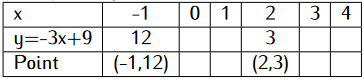
\(x-2y=-4\)
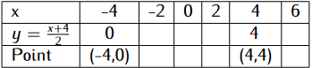
b) Using graph solve the simultaneous equations: \((4mks)\)
- If the line \(3x+y= 9\) cuts the x-axis and y-axis at A and B respectively, state the coordinates of A and B. \((2mks)\)
A Parrot flies from a tree X to another tree Y which is 70m on a bearing of \(035^0\) from X. From Y the dove flies 100 m due west to another tree Z and finally flies due south to another tree W which is on a bearing of \(230^0\) from X.
a) Using a ruler and a pair of compasses only construct an accurate scale drawing showing the positions of X, Y, Z, and W. (scale : 1 cm=10 cm) \((4mks)\)
b) By measurement from your scale drawing determine:
i) The distance and bearing of Z from X. \((2mks)\)
ii) The distance of W from Z \((1mk)\)
iii) The distance of W from X \((1mk)\)
c) The compass bearing of W from Y. \((2mks)\)
SECTION A: (50 MARKS)
Answer all the question in this section
- Evaluate: \((3mks)\)
\[ \frac{6\times\frac{1}{3}\,of\,12\div2-\frac{1}{3}\,of\,36\div6+3\times4}{\frac{1}{4}\,of\,24\div2-24\div\frac{3}{5}\,of\,10+5\times(-2)}\]
Factorize completely \((3mks)\)
\[(x+y)(4x-5y)-(x+y)^2\]
Murimi, a cattle keeping farmer, has twenty five times as many cows as goats, and three-fifth as many sheep as goats.
a) If there are g goats, write down a simplified expression in g for the total number of animals Murimi has. \((1mk)\)
b) Given that there are 75 sheep, calculate as a percentage the sum of goats and sheep to the number of cows Murimi had. \((3mks)\)
Four interior angles of a hexagon are \(120^0\), \(115^0\), \(135^0\) and \(80^0\). The fifth interior angle is twice times the sixth. Find, in degrees the sixth interior angle. \((3mks)\)
Munyiti uses \(\frac{1}{3}\) of his farm for planting mangoes, \(\frac{1}{4}\) for planting macadamia and \(\frac{2}{5}\) of the remainder for grazing and home stead. He still has 6 hectares of unused land. Find the size of land Munyiti used for planting mangoes.\((3mks)\)
Use tables and squares roots to evaluate to 4 significant figures. \((4mks)\)
\[\left(\sqrt[]{245.6}+(4.436)^2\right)^\frac{1}{2}\]
A speaker coil which is made by winding 750 m of copper wire of cross-sectional diameter of 1.89 mm has the same mass as another coil of copper wire with cross-sectional diameter of 2.1 mm. Find the length of the wire making the second coil. \((3mks)\)
Three children shared some money. Rose got \(0.\dot{5}\) of the money and Mutua \(0.\dot3\) of the remainder. Loice received the rest which was Ksh. 400. How much did Mutua get? \((4mks)\)
The sum of the interior angles of an n-sided polygon is \(1080^0\). Find the value of n and hence calculate the size of each exterior angle. \((3mks)\)
Three metal rods of lengths 243cm, 270cm and 198cm were cut into shorter pieces all of the same length to make window grills. Calculate the length of the longest piece that can be cut from each of the rods and hence the total number of pieces that can be obtained from the rods. \((3mks)\)
A blend of juice is made from pineapple and passion. The cost of two limes of pineapple is Ksh. 162 and three limes of passion is Ksh. 414. In what ratio should the juice be mixed such that by selling the mixture at Ksh. 140 per lime a profit of \(40\%\) is realized? \((3mks)\)
Awino bought a shirt for Ksh. 1400 and sold it to a customer at a profit of \(35\%\). What is the marked price of the shirt if selling the shirt she had allowed her customer a \(10\%\) discount on the marked price? \((4mks)\)
Sarah bought 3 plates and 6 jugs at a total cost of Ksh. 324. If she had bought 1 plate more and 2 jug less, she would have spent Ksh. 48 less. On another occasion Sarah bought 5 plates and 5 jugs at the same prices. Find how much she spent on the second occasion. \((3mks)\)
A Kenyan tourist left Berlin, Germany for Nairobi, Kenya through Geneva, Switzerland. While in Geneva, he bought a watch worth 110.6 Deutsche marks. Using the exchange rates below:
1 Swiss Franc = 1.58 Deutsche marks.
1 Swiss Franc = 100.98 Kenya shillings.Find the value of the watch in:
a) Swiss Francs \((2mks)\)
b) Kenya shillings \((1mk)\)
Using a ruler and a pair of compasses only construct triangle ABC such that \(AB= 5.8\,cm\), \(BC = 7\,cm\) and angle \(CBA = 75^0\). Measure angle \(CAB\). \((3mks)\)
Two pipes A and B each running alone can fill a Jerican in 6 hours and 10 hours respectively. a drainage pipe C can empty the full Jerican in 15 hours. If pipe A and B are turned on and left running for \(1\frac{1}{2}\) hours and then the drainage pipe C is opened and all three left running, find how much longer it takes to fill the Jerican. \((4mks)\)
SECTION B (50 MARKS)
Attempt all the questions
Peter bought a second hand probox and later sold it through a sales agent who charges \(6.5\%\) commission on the price of the probox. He received Ksh. 392,700 from the agent after the latter had deducted his commission. Peter incurred a loss of \(30\%\) on the price at which he had bought the probox.
a) Determine the price at which the agent sold the probox. \((2mks)\)
b) Find the price at which Peter had bought the probox \((3mks)\)
c) If the amount Peter paid for the probox was \(25\%\) less than the price of the new probox, calculate the price of the new probox. \((3mks)\)
d) Express as a percentage the amount Peter received for his probox to its price when new. \((2mks)\)
Nyakio and Anyango went to buy clothes for their business. Nyakio spent Ksh. 20,150 to buy a number of dresses and skirts from a wholesaler A at Ksh. 450 per dress and Ksh. 200 per skirt. Anyango bought the same number of dresses and skirts from wholesaler B where she paid \(20\%\) less per dress and \(10\%\) more per skirt. It was found that Anyango spent Ksh. 2,710 less than Nyakio.
a) Determine the number of dresses and skirts each cloth dealer bought.\((4mks)\)
b) Nyakio sold all her clothes at a profit of \(20\%\) per dress and \(40\%\) per skirt. How much profit did she make? \((3mks)\)
c) Anyango also sold all her clothes at a profit of \(20\%\) per dress and \(40\%\) per skirt. Calculate to three significant figures the percentage profit she made. \((3mks)\)
A metal sheet measuring \(1 \,m\) long and \(80 \,cm\) wind is \(2\,mm\) thick and its density is \(2.5 g/cm^3\). A square of side \(x\, cm\) is removed from each of the four corners and the remaining part folded to form an open cuboid.
a) Calculate the area of the remaining part in terms of \(x\). \((2mks)\)
b) Given that the area of the remaining part is \(0.76 \,m^2\), calculate the value of \(x\) and hence state the internal dimensions of the cuboid.\((3mks)\)
c) Calculate the mass in kg of the empty cuboid to two significant figures.\((2mks)\)
d) If the cuboid is filled with a liquid of density \(d \,g/cm^3\) and its mass when full of the liquid is 39.8 kg, calculate the value of \(d\).\((3mks)\)
Use a ruler and a pair of compasses only for all the constructions in this question.
a) Construct a triangle \(ABC\) in which \(BC=7cm\), \(AC=9cm\), and angle \(ACB=135^0\) \((3mks)\)
b) Measure AB and angle ABC \((2mks)\)
c) From A drop a perpendicular to meet BC produced at D. \((1mk)\)
d) Measure AD and hence calculate the area of triangle ABC. \((2mks)\)
e) Mark a point E on AD such that area of triangle BEC is 1.5 the area of triangle ABC. \((1mk)\)
f) Complete triangle BEC and measure EC. \((1mk)\)
Town B is 250 km from a bearing of \(050^0\) from town A. Town C is 350 km from town B and on a compass bearing of \(S57^0E\) from town B. A fourth town D is on a bearing of \(240^0\) from town C and due south of town A.
a) Using a scale of \(1\,cm=50 \,km\), draw an accurate scale drawing showing the positions of towns A, B, C, and D. \((5mks)\)
b) By measurement from your scale drawing, determine:
i) The distance AC \((1mk)\)
ii) The distance AD \((1mk)\)
iii) The distance CD \((1mk)\)
iv) The bearing of B from C \((2mks)\)
SECTION A: (50 MARKS)
Answer all the question in this section
- Evaluate: \((3mks)\)
\[\frac{\frac{3}{5}\,of\,30+5\frac{5}{6}\div\frac{7}{12}-2\frac{2}{3}\times 1\frac{1}{2}}{5\frac{5}{8}\times1\frac{7}{9}-1\frac{1}{4}\,of\,4\frac{4}{5}+2\frac{4}{5}\div\frac{7}{10}}\]
A law firm bought 60 files at a total cost of Ksh. 10,000. Some files cost Ksh. 150 each while others cost Ksh. 250 each. Find the number of files which were bought at Ksh. 150 each. \((3mks)\)
Mutheu is now 10 years older than her younger brother. Six years ago the She was three times as old as his brother. Find their present ages. \((3mks)\)
Wambui marked a skirt at Ksh. 400 and sold it to a customer at a discount of \(15\%\). Find the percentage profit She made if she had bought the skirt at Ksh. 280. \((3mks)\)
Use tables to evaluate:- \((4mks)\)
\[(6.342+3.289)^2-\sqrt[]{(432.85-124.45)}\]
Osinya constructed a closed wooden box with external measurements 1.5 metres long, 1.4 metres wide and 0.6 metres high. The wood used in constructing the box was 10.0cm thick and has a density of \(0.75g/cm^3\). Determine the:
a) Volume in \(cm^3\) of the wood used in constructing the box. \((3mks)\)
b) Mass of the box in kilograms correct to 1 decimal place. \((1mk)\)
Factorize completely \((3mks)\)
\[(x-3y)(4x+3y)-(x-3y)^2\]
16 workers working at the rate of 9 hours a day can complete a piece of work in 14 days. How many more workers working at the rate of 7 hours a day wound complete the same job in 12 days. \((3mks)\)
In a form one class there are 5 more boys than girls. On a certain day one-quarter of the boys and one-fifth of the girls went for a football games. If 8 students from this class went for the football game, find the number of students in the class. \((3mks)\)
Kamau toured Switerland from Germany. In Switzerland he bought his wife a present worth 150 Deutsche marks. If
1 Swiss Franc = 1.65 Deutsche marks
1 Swiss Franc = 100.90 Kenya shillings
Find the value of the present in:
a) Swiss Francs correct to 2 decimal places. \((1mk)\)
b) Kenya shillings correct to the nearest Ksh \((2mks)\)
Find the least number of biscuits that can be packed into carton boxes which contain either 10 or 15 or 21 or 24 with leaving 5 biscuits unpacked. \((3mks)\)
A polygon of n sides has half of the interior angles \(140^0\) each and the rest \(160^0\) each. Find the value of n. \((2mks)\)
A coffee dealer mixes two brands of coffee, P and Q to obtain 50kg of the mixture worth Ksh. 60. If brand P is valued at Ksh. 80 per kg and brand Q is valued at Ksh. 50 per kg. Calculate the ratio in its simplest form in which brands P and Q are mixed. \((4mks)\)
In a 3 digit number, the hundreds digits is 3 more than the units digit and the tens digit is thrice the hundreds digit. If the sum of the digits is 12, find the three digits. Write the number. \((3mks)\)
Three similar pieces of timber of length 150cm, 140cm and 180cm are cut into equal pieces. Find the largest possible area of a square which can be made from any of the three pieces. \((3mks)\)
Arrange the following fractions in descending order. \((3mks)\)
\[ \frac{3}{5},\frac{8}{9},\frac{1}{3},\frac{4}{7},\frac{3}{4}\]
SECTION B (50 MARKS)
Attempt all the questions
Melvin bought a second hand minibus at later sold it through a sales agent who charged \(8\%\) commission on the price at which she sold the minibus. She received Ksh. 699,200 from the agent after she had deducted her commission. Melvin made a profit of \(15\%\) on the price at which she had bought the vehicle.
a) Calculate the price at which the sales agent sold the minibus. \((2mks)\)
b) Find the amount Melvin paid for the minibus. \((3mks)\)
c) If the amount Melvin paid was 50% less than the price of the new minibus, calculate its price when new. \((3mks)\)
d) Express as a percentage the amount Melvin received for the minibus to its price when new. \((2mks)\)
Given linear equations \(2x+y=7\) and \(5x-3y=12\):
a) Complete the following tables: \((4mks)\)
\(2x+y=7\)
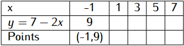
\(5x-3y=12\)
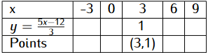
b) Use graphical method to solve the simultaneous equations: \((4mks)\)
\[\begin{equation} \begin {split} 2x+y&=7\\ 5x-3y-12&=0 \end{split} \end{equation}\]c) If the line \(2x+y-7=0\) cuts x-axis and y-axis at point A and B respectively, state the coordinates of A and B. \((2mks)\)
(a) Solution whose volume is 100 litres is made up of \(30\%\) water and \(70\%\) milk. When y litres of water are added the percentage of milk drops to \(40\%\). Find the value of y. \((4mks)\)
(b) Twenty five litres of water is added to the new solution. Calculate the percentage of milk in the resulting solution. \((2mks)\)
(c) If 8 litres of the solution in (b) above is added to 16 litres of the original solution, calculate in the simplest form, the ratio of water to milk in the resulting solution. \((4mks)\)
Kiptanui’s farm produced 13,600 bags of wheat in 2015 which was a decrease of \(15\%\) over the production in 2014. In 2016, the production was a \(25\%\) increase of the previous year but, in 2017 Kiptanui farm produced 16,405 bags of wheat.
a) Calculate the number of bags of wheat Kiptanui’s farm produced:
i) In 2014 \((2mks)\)
ii) In 2016 \((2mks)\)
b) What was the percentage decrease in production in 2017 over that of the previous year? \((2mks)\)
c) Determine the percentage increase in production in 2017 over that in 2014. Give your answer in 3 significant figure \((2mks)\)
d) Calculate the percentage increase in production in 2016 over that in 2014. \((2mks)\)
The external measurements of a closed wooden box are 1.0 m long, 70 cm wide, and 40 cm high. The wood used in making the box is 1.5 cm thick and has a density of \(0.8 g/cm^3\). Given that the box contains 25 packets of tools and each packet holds a dozen tools each weighing 108.5 g, calculate:
a) The volume of wood used in making the box. \((4mks)\)
b) The mass of the empty box in kilograms to four significant figures. \((3mks)\)
c) The total mass of the box in kilograms to 3 significant figures. \((3mks)\)
SECTION A: (50 MARKS)
Answer all the question in this section
- Without using a calculator, evaluate: \((3mks)\)
\[\frac{3\frac{1}{5}+\frac{2}{7}\,of\,1\frac{3}{4}-\frac{7}{10}}{1\frac{3}{4}-1\frac{4}{5}\div3\frac{3}{5}+3\frac{3}{4}}\]
The sum of the ages of three friends Kiama, Murugi, and Naomi is 78 years. Murugi is two and a third as old as Naomi and seven years older than Kiama. Calculate their ages. \((3mks)\)
A shirt which is marked for ksh. 750 is sold to a customer for Ksh. 673.50. What percentage discount is the customer allowed? \((2mks)\)
Starting from noon the minute hand of a clock moved so that the clock is showing 25 minutes to one.
a) Find the angle through which the minute hand has moved. \((1mk)\)
b) Given that the minute hand is 14 cm long, find the length of the arc it describes in that time. \((2mks)\)
A cylindrical tank of diameter 2.8 m and height 2.0 m is three-quarter full of water. This water is transferred to an empty rectangular container measuring 1.4 m long and 80 cm wide. Calculate the height of the water in the container in centimeters. \((3mks)\)
Three towns P, Q, and R are situated such that town Q is 40 km on a bearing of \(060^0\) from town P. Town R is 90 km on a bearing of \(150^0\) from town Q.
a) Draw a sketch showing the positions of towns P, Q, and R. \((1mk)\)
b) Calculate:
i) The size of angle PQR \((1mk)\)
ii) The distance of R from P \((2mks)\)
A school bought 40 books at a total cost of Ksh 10,800. Some books cost Ksh 200 each while others cost Ksh 300 each. Find the number of books which were bought at Ksh 200 each. \((3mks)\)
Muthoni is now four times as old as his daughter. In sixteen years’ time she will be twice as old as her daughter. Find their present ages. \((3mks)\)
Ali sold goods which were marked at Ksh. 450, 000 allowing a discount of \(5\%\) to the customer. If he received Ksh. 35,055 as a commission for this sale, calculate the percentage rate of commission he was paid. \((3mks)\)
Solve the following expression \((3mks)\)
\[\frac{3y-4}{2}-\frac{1-2y}{3}=\frac{2y-1}{4}\]
(a) The angles of a triangle are \((2x-15)^0\), \((x+35)^0\) and \((5x-40)^0\). Write down an equation in x with three terms only for the sum of the angles of the triangle. \((1mk)\)
(b) Solve the equation in (a) above and hence find the size of the largest angle. \((2mks)\)
Gladys house is 25 km from the office where she works. She uses her car to travel to and from her office every day for 5 days a week. Her car consumes petrol at the rate of 1 litre for every 12 km and petrol costs Ksh. 112.20 per litre. Allowing 4 weeks for holidays in a year, calculate the amount of money Gladys spends on petrol going to and from her office in one year. \((3mks)\)
The radius of a water can in form of cylinder is increased by \(20\%\) while its height decreased by \(15\%\). If the capacity of the old can is \(250 cm^3\), find the capacity of the new can. \((3mks)\)
In a certain school there are 30 more boys than girls. One-quarter of the boys and two-thirds of the girls are boarders. If there are 255 boarders, find the number of students in that school. \((3mks)\)
After work a hawker had four times as many ten-shilling coins as twenty-shilling coins, eight times as many five-shilling coins as twenty-shilling coins and thrice as many one-shilling coins as ten-shilling coins. After counting his money he found that he had a total of Ksh. 560. Calculate the number of coins he had. \((3mks)\)
Given that \(x=4\), \(y= -3\), and \(z= -1\) evaluate. \((3mks)\)
\[\frac{3x^2yz^2-4xy^2z^2+5x^2y^2z^2}{4xy^2z+3x^2yz-x^2y^2z}\]
SECTION B (50 MARKS)
Attempt all the questions
Tum bought a number of T-shirts and a number of trousers at Ksh 100 and Ksh 250 respectively from a wholesaler in which he spend Ksh 9,500. Kerich bought the same number of T-shirts and trousers from another wholesaler where he paid \(25\%\) more for a T-shirt and \(14\%\) less for a trouser. Therefore, Kerich spent Ksh 550 less than Tum.
a) Determine the number of T-shirts and trousers each guy bought. \((4mks)\)
b) If Tum sold all his clothes at a profit of \(40\%\) per T-shirt and \(20\%\) per trouser, determine the profit he would make. \((3mks)\)
c) Similarly, if kerich sold all his clothes at a profit of \(20\%\) per T-shirt and \(40\%\) per trouser, calculate the percentage profit he would make on the sale of all his clothes. \((3mks)\)
A rectangular sheet is 90 cm long and 70 cm wide. The sheet is 1.8 mm thick and made of material whose density is \(2.5g/cm^3\). A square of side t cm is removed from each corner and the remaining part folded to form an open cuboid.
a) Given that the area of the remaining part is \(A \,cm^2\), write down an equation for \(A\) in terms of \(t\). \((2mks)\)
b) Calculate to one decimal place the mass of the empty cuboid in kg given that \(t= 5cm\). \(3mks)\)
c) Find the dimensions of the cuboid and hence calculate its capacity in litres. \((3mks)\)
d) If the cuboid is filled with liquid whose density is \(d\, g/cm^3\) and its mass found to be 19.6 kg, calculate the value of \(d\). \((2mks)\)
Boat A is 160 m from the base of a vertical cliff. From A the angle of elevation of the top of the cliff is \(38^0\). From another boat B nearer to the base of the cliff, the angle of elevation of the top of the cliff is \(60^0\). The two boats are on the same straight line in front of the cliff.
a) Using a scale of \(1 cm=20 m\), draw an accurate scale drawing to represent the above information. \((4mks)\)
b) Use your scale drawing to determine:
i) The height of the cliff \((2mks)\)
ii) The distance between the two boats \((2mks)\)
iii) The distance of boat B from the base of the cliff \((2mks)\)
A truck left Uganda on Wednesday evening and travelled to Mombasa according to the travel time table below arriving there on Friday morning.
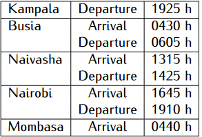
a) Calculate:
b) The time taken by the truck to travel from: \((4mks)\)
i) Kampala to Busia
ii) Busia to Naivasha
iii) Naivasha to Nairobi
iv) Nairobi to Mombasa
c) The total travelleing time between Kampala and Mombasa. \((2mks)\)
d) The total stoppage time during the whole journey \((2mks)\)
e) The average speed for the whole journey given that the distance between Kampala and Mombasa is 1995 km \((2mks)\)
Wanja, Murimi, Kareb, and Elisha decided to buy a minibus. They acceded to pay for the cost of the minibus in the ratio \(9:7:4:5\). Basing their calculations on the marked price of the minibus, they found that Wanja would pay Ksh. 320,500, more than Kareb. The sales operator however allowed them a \(20\%\) discount on cash payment.
a) Calculate:
i) The marked price of the minibus. \((2mks)\)
ii) How much more Murimi and Kareb paid than Wanja.\((5mks)\)
b) The four friends agreed to divide their profit obtained from the minibus in the ratio of their contributions after setting aside 15% of the profits for maintenance. If the minibus made Ksh. 96,500 as the profit during one month, how much did Elisha received that month? \((3mks)\)